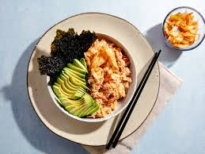

The second recipe, and a healthy seafood alternative-- is the Salmon Bowl recipe.
| Active Time: | Total Time: | Servings: | Yield: | 5 mins | 5 mins | 1 | 1 salmon bowl |
|---|
A layered bowl made up of tender jasmine rice, glazed teriyaki style salmon bites, asian cabbage slaw, fresh creamy avocado and crisp cucumber. Inspired by chirashi, or Japanese rice and raw fish bowls, features a savory vinegared rice that’s typically served with sushi. Pair it with umami-rich nori and kimchi, and you've got an epic lunch.
The benefits of salmon is that it is packed with omega-3 fatty acids. Omega-3 fatty acids offer a range of nutrition benefits, including lowering risk factors for heart disease, fighting inflammation, assisting with prevention of auto-immune diseases, and improving eye health. Next, salmon are high in protein as well.
You can use any type of mayonnaise in this recipe and any type of rice, even brown or short grain Japanese sushi rice.
Save time by purchasing pre-cooked salmon for this recipe.
If you don't have a microwave, an oven will work too. Place salmon, rice and ice cube on a large piece of foil on a baking sheet and fold foil up around the sides to seal. Cook at 350 degrees F (175 degrees C) for 10 minutes and proceed with the recipe as written.
| Calories | Fat | Carbs | Protein | 645 | 33g | 62g | 26g |
|---|